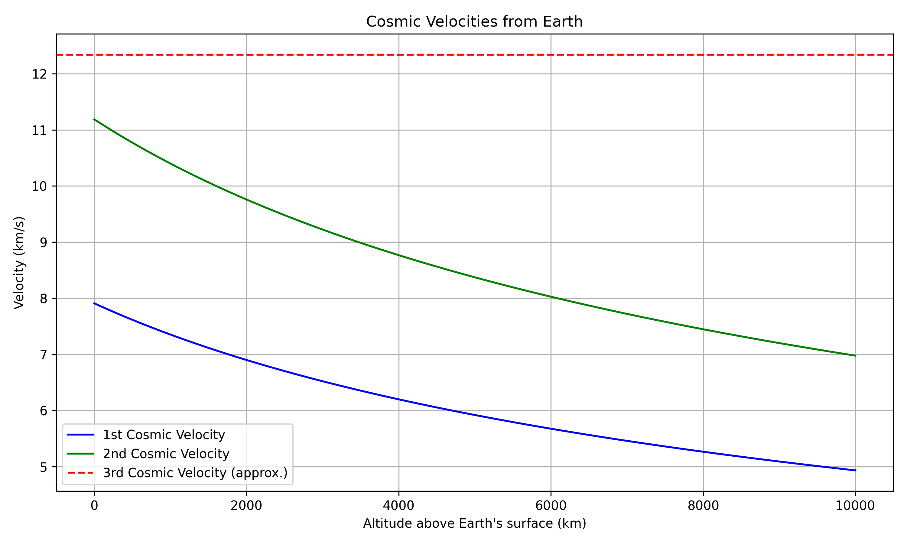
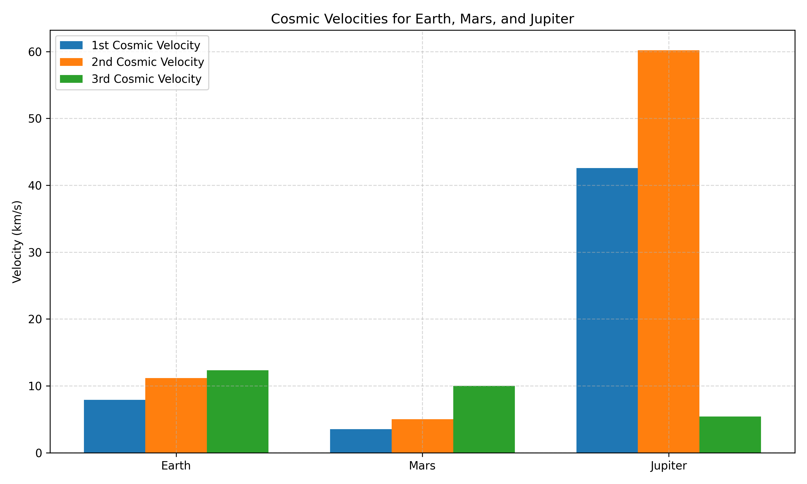

Escape Velocities and Cosmic Velocities
The Three Cosmic Velocities
In orbital mechanics, the cosmic velocities define the speeds required for different types of motion in a gravitational field, typically around a planet like Earth.
1. First Cosmic Velocity (Orbital Velocity)
- Definition: The minimum velocity needed to stay in a stable circular orbit around a planet without falling back to its surface.
- Formula: \( v_1 = \sqrt{\frac{GM}{r}} \)
- Meaning: It allows a satellite to orbit Earth just above the atmosphere. For Earth, it's approximately 7.9 km/s near the surface.
2. Second Cosmic Velocity (Escape Velocity)
- Definition: The minimum velocity needed to escape a planet’s gravitational field entirely, without further propulsion.
- Formula: \( v_2 = \sqrt{\frac{2GM}{r}} \)
- Meaning: A spacecraft must reach this speed to leave Earth and travel into deep space. For Earth, it’s about 11.2 km/s.
3. Third Cosmic Velocity (Interstellar Velocity)
- Definition: The minimum velocity needed to escape the gravitational pull of the Sun, starting from Earth's orbit.
- Approximate Value: Around 16.7 km/s, relative to Earth’s motion.
- Meaning: Required for a spacecraft to leave the Solar System entirely and travel to other star systems.
These velocities are crucial in space mission planning, satellite deployment, and understanding gravitational dynamics in astrophysics.

Cosmic Velocities for Different Celestial Bodies
Cosmic velocities vary based on the mass and radius of the celestial body. Here's a comparison of the first, second, and third cosmic velocities for Earth, Mars, and Jupiter:
1. First Cosmic Velocity (\(v_1\))
- Minimum speed to enter a stable circular orbit near the surface.
- Formula: \( v_1 = \sqrt{\frac{GM}{R}} \)
2. Second Cosmic Velocity (\(v_2\))
- Minimum speed to escape the body's gravitational field.
- Formula: \( v_2 = \sqrt{2} \cdot v_1 \)
3. Third Cosmic Velocity (\(v_3\))
- Minimum speed to escape the Sun’s gravity from the planet’s orbit.
- Formula: \( v*3 = \sqrt{2GM*{\odot}/r} - v\_{orbital} \)
Physical Meaning
- Higher mass and smaller radius → higher required velocities.
- Jupiter has the strongest gravity among the three, requiring the highest speeds.
- Mars, being smaller, has much lower escape speeds, making launches easier.
Visualization
A bar chart can be used to compare the three velocities for Earth, Mars, and Jupiter, clearly showing how gravitational strength affects escape and orbital dynamics.
This comparison helps understand mission planning, fuel requirements, and orbital mechanics across different planetary environments.
